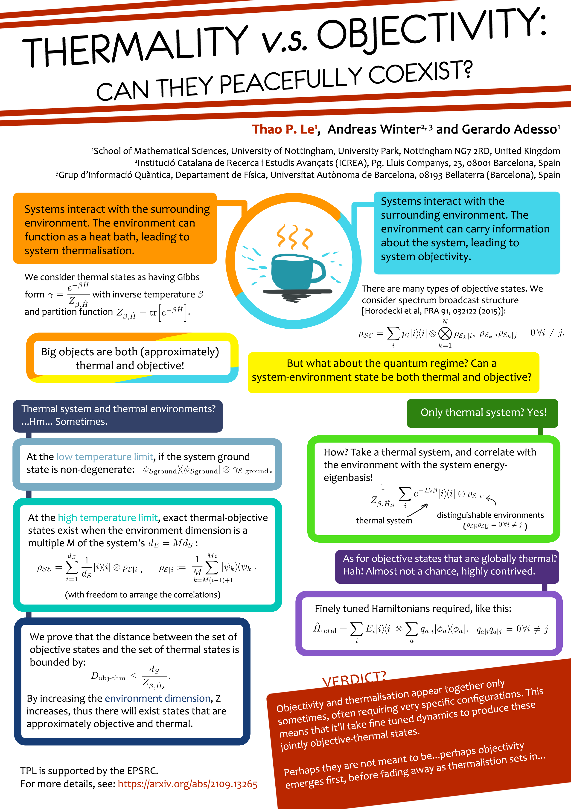

The following poster was presented at the Quantum Thermodynamics Conference - QTD 2021 (online), on the 4th - 8th October 2021. The corresponding paper for this work is Thermality versus objectivity: can they peacefully coexist?.

1School of Mathematical Sciences, University of Nottingham, University Park, Nottingham NG7 2RD, United Kingdom
2Institució Catalana de Recerca i Estudis Avançats (ICREA), Pg. Lluis Companys, 23, 08001 Barcelona, Spain
3Grup d’Informació Quàntica, Departament de Física, Universitat Autònoma de Barcelona, 08193 Bellaterra (Barcelona), Spain
The image has a blue cup sitting on a surface. Orange wavy lines rise from the top surface, representing heat loss from the cup. Straight blue lines spread out like rays from the side, representing the light information about the cup spreading out. The image is surrounded by a thick round line, half of which is orange and half of which is blue.
Systems interact with the surrounding environment. The environment can function as a heat bath, leading to system thermalisation.
We consider thermal states as having Gibbs form \( \gamma = \dfrac{e^{-\beta \hat{H}}}{Z_{\beta,\hat{H}}} \) with inverse temperature \( \beta \) and partition function \( Z_{\beta,\hat{H}} = tr [ e^{-\beta \hat{H}} ] \).
Systems interact with the surrounding environment. The environment can carry information about the system, leading to system objectivity.
There are many types of objective states. We consider spectrum broadcast structure [Horodecki et al, PRA 91, 032122 (2015)]:
\[ \rho_{\mathcal{SE}} = \sum_i p_i |i\rangle \langle i| \otimes \bigotimes_{k=1}^{N} \rho_{\mathcal{E}_k|i}, \quad \rho_{\mathcal{E}_k |i} \rho_{\mathcal{E}_k |j} =0 \, \forall i \neq j \]
Big objects are both (approximately) thermal and objective!
But what about the quantum regime? Can a system-environment state be both thermal and objective?
How? Take a thermal system, and correlate with the environment with the system energy-eigenbasis!
\[ \dfrac{1}{Z_{\beta,\hat{H}_\mathcal{S}}} \sum_i e^{-E_i \beta} |i\rangle\langle i| \otimes\rho_{\mathcal{E}|i} \]
with thermal system and distinguishably environments ( \( \rho_{\mathcal{E} |i} \rho_{\mathcal{E} |j} =0 \, \forall i \neq j \) )
At the low temperature limit, if the system ground state is non-degenerate: \( |\psi_{\mathcal{S}_\text{ground}} \rangle \langle \psi_{\mathcal{S}_\text{ground}} | \otimes \gamma_{\mathcal{E}_\text{ground}} \).
At the high temperature limit, exact thermal-objective states exist when the environment dimension is a multiple \( M \) of the system's \( d_E = M d_S \):
\[ \rho_{\mathcal{SE}} = \sum_i^{d_S} \dfrac{1}{d_S} | i \rangle \langle i | \otimes \rho_{\mathcal{E}|i},\quad \rho_{\mathcal{E}|i} := \dfrac{1}{M} \sum_{k=M(i-1)+1}^{Mi} | \psi_k \rangle \langle \psi_k |. \]
(with freedom to arrange the correlations)
We prove that the distance between the set of objective states and the set of thermal states is bounded by:
\[ D_\text{obj-thm} \leq \dfrac{d_S}{Z_{\beta, \hat{H}_\mathcal{E}}}. \]
By increasing the environment dimension, \( Z\) increases, thus there will exist states that are approximately objective and thermal.
Finely tuned Hamiltonians required, like this:
\[ \hat{H}_\text{total} = \sum_i E_i | i \rangle \langle i | \otimes \sum_a q_{a|i} | \phi_a \rangle \langle \phi_a |,\quad q_{a|i} q_{a|j} = 0 \forall i\neq j \]
Objectivity and thermalisation appear together only sometimes, often requiring very specific configurations. This means that it'll take fine tuned dynamics to produce these jointly objective-thermal states.
Perhaps they are not meant to be...perhaps objectivity emerges first, before fading away as thermalisation sets in...
TPL is supported by the EPSRC
For more details, see: https://arxiv.org/abs/2109.13265
{kind=link}